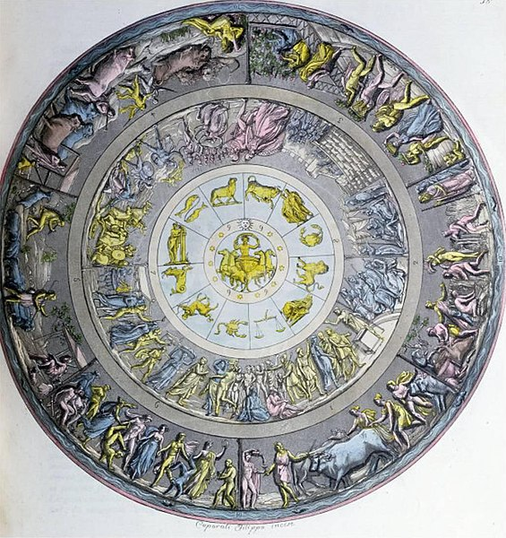

The Shield of Achilles
By GenericLiteraturePerson
HOMER'S ILIAD PROVIDES A VIVID DESCRIPTION of the shield of Achilles forged by the god Hephaestus (Roman: Vulcan). After the death of Patroclus, Achilles resolves to fight in battle to avenge his friend despite being doomed to death if ever he should engage in the Trojan war. It is arguably one of the most interesting parts of the epic poem. The passage begins with a description of the heavens followed by a picture of two cities - one at war and the other at peace, as if a microcosm of human civilization, finishing it off with the ocean which was believed to encircle the world. The following is an excerpt from Alexander Pope's translation of the Iliad (the text below is a condensed version; it also omits the violent sections from the source).
THEN first he form’d the immense and solid shield;
Rich various artifice emblazed the field;
Its utmost verge a threefold circle bound;
A silver chain suspends the massy round;
Five ample plates the broad expanse compose,
And godlike labours on the surface rose.
There shone the image of the master-mind:
There earth, there heaven, there ocean he design’d;
The unwearied sun, the moon completely round;
The starry lights that heaven’s high convex crown’d;
The Pleiads, Hyads, with the northern team;
And great Orion’s more refulgent beam;
To which, around the axle of the sky,
The Bear, revolving, points his golden eye,
Still shines exalted on the ethereal plain,
Nor bathes his blazing forehead in the main.
Two cities radiant on the shield appear,
The image one of peace, and one of war.
Here sacred pomp and genial feast delight,
And solemn dance, and hymeneal rite;
Along the street the new-made brides are led,
With torches flaming, to the nuptial bed:
The youthful dancers in a circle bound
To the soft flute, and cithern’s silver sound:
Through the fair streets the matrons in a row
Stand in their porches, and enjoy the show...
Another part (a prospect differing far)
Glow’d with refulgent arms, and horrid war...
They march; by Pallas and by Mars made bold:
Gold were the gods, their radiant garments gold,
And gold their armour: these the squadron led,
August, divine, superior by the head!
A place for ambush fit they found, and stood,
Cover’d with shields, beside a silver flood...
And the whole war came out, and met the eye;
And each bold figure seem’d to live or die.
A field deep furrow’d next the god design’d,
The third time labour’d by the sweating hind;
The shining shares full many ploughmen guide,
And turn their crooked yokes on every side.
Still as at either end they wheel around,
The master meets them with his goblet crown’d;
The hearty draught rewards, renews their toil,
Then back the turning ploughshares cleave the soil:
Behind, the rising earth in ridges roll’d;
And sable look’d, though form’d of molten gold...
Next this, the eye the art of Vulcan leads
Deep through fair forests, and a length of meads,
And stalls, and folds, and scatter’d cots between;
And fleecy flocks, that whiten all the scene.
A figured dance succeeds; such once was seen
In lofty Gnossus for the Cretan queen,
Form’d by Daedalean art; a comely band
Of youths and maidens, bounding hand in hand.
The maids in soft simars of linen dress’d...
Thus the broad shield complete the artist crown’d
With his last hand, and pour’d the ocean round:
In living silver seem’d the waves to roll,
And beat the buckler’s verge, and bound the whole.